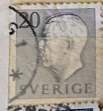
| SOURCE | TITLE| IMAGE MATCH | click to source page |
| eBay | Royalty Used Swedish Stamps for sale | eBay | 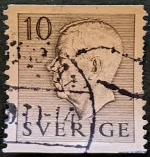 |
| HipStamp | Sweden SC#435 20õ King Gustaf VI Adolf (1952) OG/NH | Europe - Sweden, General Issue Stamp / HipStamp |  |
| HipStamp | Sweden #421 25o Gustaf VI Adolf | Europe - Sweden, General Issue Stamp / HipStamp | 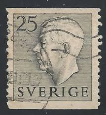 |
| Find Your Stamps Value | Value of sverige 20 ore stamps | 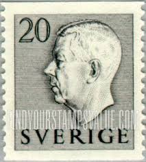 |
| Todocolección | suecia 1951 scott 424 sello º king gustav vi ad - Buy Antique stamps of Sweden on todocoleccion | 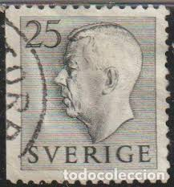 |
| Find Your Stamps Value | Gustaf VI Adolf (Letters, numerals in white) 30o Ultramarine stamp price, value | 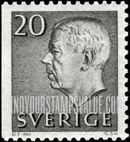 |
| Find Your Stamps Value | Value of sweden 25 gustav stamps | 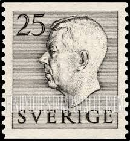 |
| lastdodo.com | Gustaf VI Adolf 25 (1957) - Sweden - LastDodo | 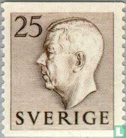 |
| Find Your Stamps Value | Gustaf VI Adolf (Letters in color) 10o Dull green stamp price, value |  |
| HipStamp | Sweden 460 Used (11 | Europe - Sweden, General Issue Stamp / HipStamp |  |
| stampsandstuff.net | Stamps from Sweden | 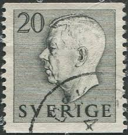 |
| Online Philately | F.407, 25 öre Gustav VI Adolf, typ I ** - Online Philately | 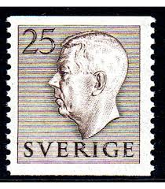 |
| Shutterstock | Sweden Circa 1957 Stamp Printed Sweden Stock Photo 122110114 | Shutterstock | 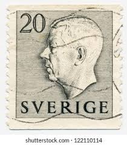 |
| Find Your Stamps Value | Value of 30 ore sverige brown stamps |  |
| HipStamp | Sweden #460 Single Used | Europe - Sweden, General Issue Stamp / HipStamp | 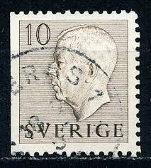 |
| eBay | Sverige Foreign 40c Blue Stamp Used - #A801 | eBay | 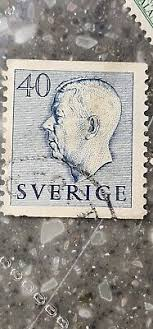 |
| Todocolección | suecia 1872-9 scott 30 sello º numeros tipo cir - Acheter Timbres anciens de Suède sur todocoleccion | 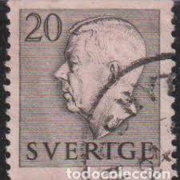 |
| Find Your Stamps Value | Value of sverige 40 stamps | 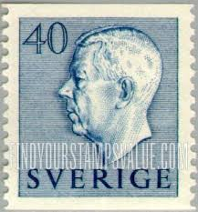 |
| Shutterstock | Sweden Circa 1970 Stamp Printed By Stock Photo 192221630 | Shutterstock | 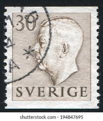 |
| Shutterstock | Sweden Circa 1951 Stamp Printed Sweden Stock Photo 125836835 | Shutterstock | 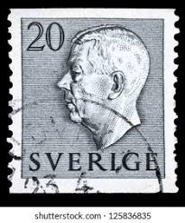 |
| allnumis.com | 30 öre 1957 - King Gustaf VI Adolf - with imprint, Royalty - Sweden - Stamp - 54919 |  |
| Find Your Stamps Value | Value of colon 10 centavos chile stamps |  |
| Find Your Stamps Value | Value of 40 sverige green stamps | 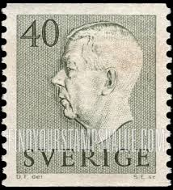 |
| ProBoards | Postmark Calendar | The Stamp Forum (TSF) | 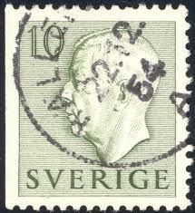 |
| Find Your Stamps Value | Value of sverige 20 stamps | 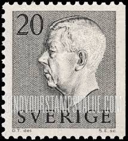 |
| Alamy | Postage stamp: Sweden, 1951, King Gustaf Adolf VI., stamped Stock Photo - Alamy | 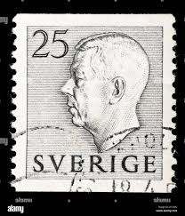 |
| Find Your Stamps Value | Wert von sverige 20 ore Briefmarken | 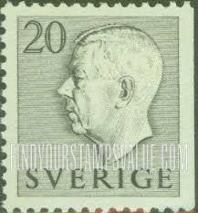 |
| 123RF | Stamp Printed In Czechoslovakia Shows General Milan Stefanik, Slovak Politician, Diplomat And Astronomer, Circa 1947 Stock Photo, Picture and Royalty Free Image. Image 171166061. |  |
| Find Your Stamps Value | Valeur du timbre sverige 25 ore | 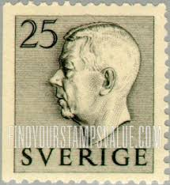 |
| Stampedia | stampedia SWEDEN STAMP catalog |  |
| Find Your Stamps Value | Value of sverige 30 Öre gustaf stamps | 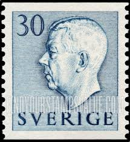 |
| Find Your Stamps Value | Gustaf VI Adolf (Letters, numerals in white) 50o Gray green stamp price, value | 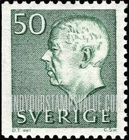 |
| vividagallery.com | Sweden King Gustaf VI Adolf Royal Portrait Profile Monarchy Defi Beach Towel by Vivida Gallery - Vivida Gallery | 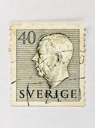 |
| Dreamstime.com | King Gustaf Vi Adolf Stock Photos - Free & Royalty-Free Stock Photos from Dreamstime | 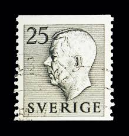 |
| The RainKey | Worldwide Stamps – Page 18 – The RainKey | 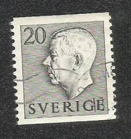 |
| Alamy | Sweden postage stamp hi-res stock photography and images - Page 12 - Alamy | 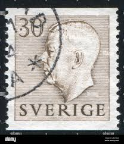 |
| Online Philately | F.406D1, 25 öre Gustav VI Adolf, type I ** - Online Philately | 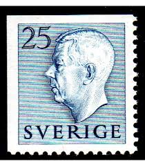 |
| Dreamstime.com | Per Henrik Ling editorial photography. Image of coiffure - 96888972 | 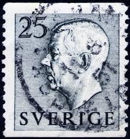 |
| finnserver.com | Ruotsi 1950 - 1959 Postimerkit vmstamps.comwww.vmstamps.com - Postimerkkiliike keräilijälle | 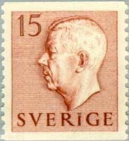 |
| Shutterstock | Moscow Russia May 15 2018 Stamp Foto de stock 1116057467 | Shutterstock | 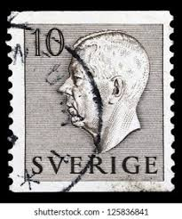 |
| CollectorBazar | Sweden 1957 King Gustaf VI Adolf series StampRK-WS-1423 | 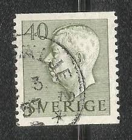 |
| Shutterstock | Sweden Circa 1957 Postage Stamp Sweden Stock Photo 2104518425 | Shutterstock | 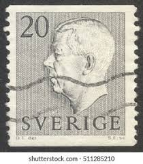 |
| Todocolección | suecia. palacio real de estocolmo, 1941-58. yt- - Buy Antique stamps of Sweden on todocoleccion | 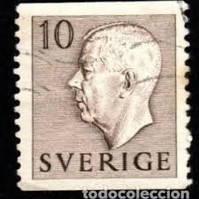 |
| digitaltmuseum.org | Forsberg, Karl-Erik (1914 - 1995) - DigitaltMuseum | 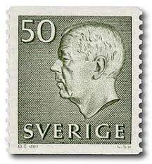 |
| Shutterstock | Sweden Postage Stamps: Over 4,731 Royalty-Free Licensable Stock Photos | Shutterstock | 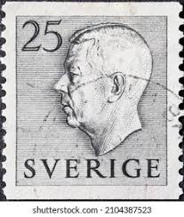 |
| ebid.net | Villeroy & Boch Naif Design Bride & Groom Wedding Trinket Pot - Gerard C. Laplau on eBid United States | 176096233 | 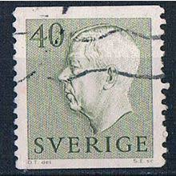 |
| Blogger.com | DATABASE: Sven Ewert | 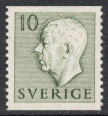 |
| lastdodo.com | 1964 King Gustaf VI Adolf type III Stamp catalogue - LastDodo | 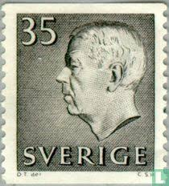 |
| Shutterstock | Sweden Circa 1959 Stamp Printed Sweden Stock Photo 92264425 | Shutterstock | 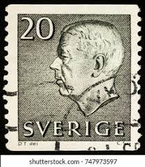 |
| eBay UK | Royalty Swedish Stamp Booklets for sale | eBay UK | 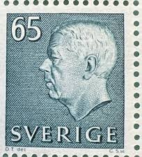 |
| Dreamstime.com | King Gustav Stock Illustrations – 12 King Gustav Stock Illustrations, Vectors & Clipart - Dreamstime | 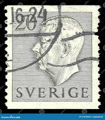 |
| Shutterstock | Sweden 1961 March 1 20 Öre Stock Photo 2367993325 | Shutterstock | 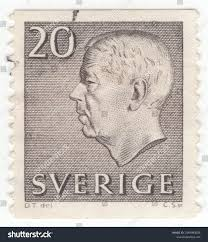 |
| Shutterstock | Sweden Circa 1947 Stamp Printed Sweden Stock Photo 103773044 | Shutterstock | 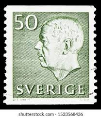 |
| Find Your Stamps Value | Three Crowns 2.80k Red stamp price, value | 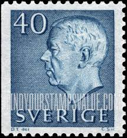 |
| Shutterstock | 5+ Hundred Male Vi Royalty-Free Images, Stock Photos & Pictures | Shutterstock | 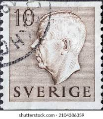 |
| Alamy | King Gustaf VI Adolf of Sweden, c1970s(?). Artist: Unknown Stock Photo - Alamy | 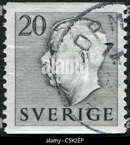 |
| Tradera | Se produkter som liknar F 412. MELLERUD 7.5.56. P/DAL. på Tradera (708846325) | 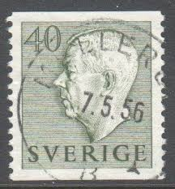 |
| eBay | Royalty Postage Swedish Stamps for sale | eBay | |
| Shutterstock | Sweden Circa 1951 1968 Stamp Printed Stock Photo 178028645 | Shutterstock |